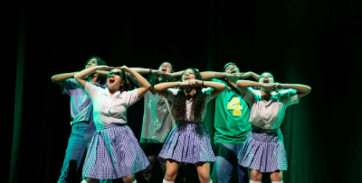
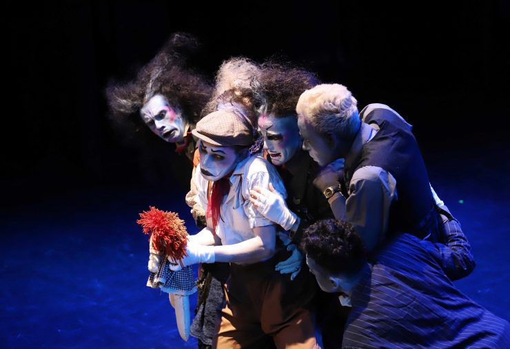
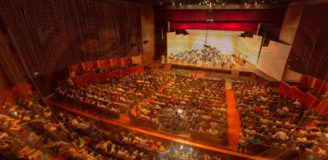

Bienvenidos a la gran inaguracion del teatro de los sueños en medellin, un nuevo hito en la vibrante escena cultural de nuestra ciudad.
Este teatro es mas que un edificio;es un espacio donde la imaginacion cobra vida, donde los sueños se convierten en realidad y donde cada función es un viaje a mundos desconocidos.
Aqui,en el Teatro de los Sueños, creemos en el poder transformador del arte y la cultura.Creemos que el teatro puede abir mentes,tocar corazones y cambiar vidas
